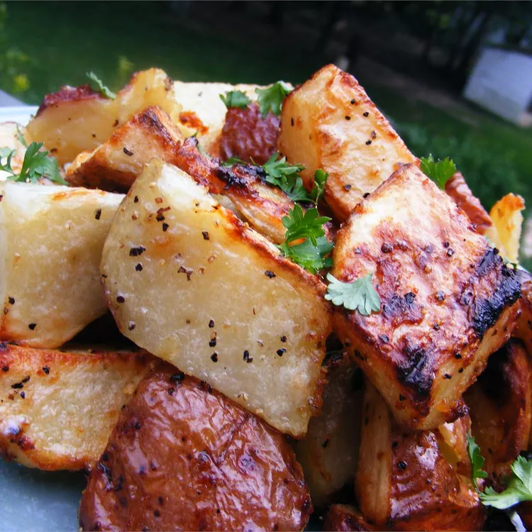

Back
Quick and Easy Grilled Potatoes

These grilled potatoes are soft inside but perfectly grilled on the outside. This recipe is so simple and makes a delicious side dish. We serve them with green onions and sour cream!
Ingredients
- 2 large ruseet potatoes, scrubbed
- 2 tablespoons olive oil
- 2 salt and ground black pepper to taste
Steps
- Preheat an outdoor grill for medium heat and lightly oil the grate.
- Poke potatoes several times with a fork; place onto a microwave-safe plate. Microwave on high power for 5 minutes, turning potatoes over halfway through.
- Slice each potato open lengthwise; microwave for 2 more minutes.
- Brush oil on the cut sides, then season with salt and pepper. Cook on the preheated grill until potatoes are tender on the inside and crispy on the outside, 15 to 20 minutes, turning halfway through.